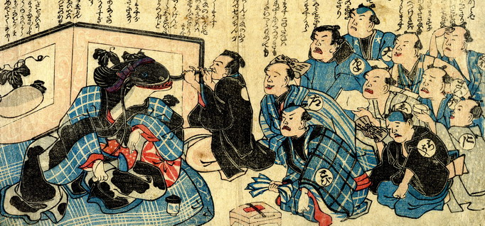

職人たちの見舞いを受ける鯰。鉢巻きを締め、座布団の上に座って枕にもたれている。背後に立てられた屏風には瓢箪が描かれている。医者が鯰のひげを手にして、診断している。職人たちは見舞いの品を持って、地震で儲けた礼を、鯰に述べている。
出典：親書誌：U426_nichibunken_0158：（鯰の見舞い；ナマズノミマイ）／日付：2010／資源識別子：U426_nichibunken_0158_0001_0000
Copyright (c)2010- International Research Center for Japanese Studies, Kyoto, Japan. All rights reserved.